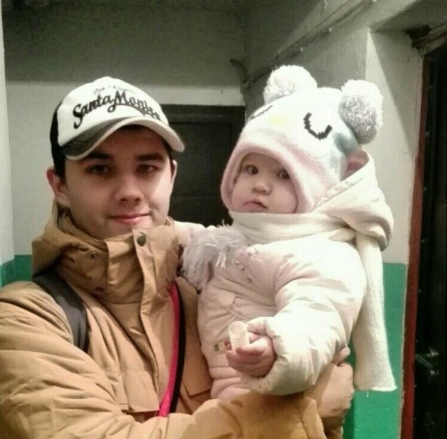

Свинкин Виктор Александрович
- Мужчина, 21 год, родился 27 июля 1995 года
- Мобильный телефон: +7 (900) 537-97-29
- Почта: feniks4913@yandex.ru
- Проживает: Вологда
- Гражданство: Россия, есть разрешение на работу: Россия
- Готов к переезду: Нет, не готов к командировкам

Опыт работы — 2 года 2 месяца
Январь 2015 — настоящее время
- 2 года 2 месяца
- Индивидуальное предпринимательство / частная практика / фриланс
- Россия
- фрилансер
- Разработка сайтов.
Образование — Среднее специальное
- 2018 Вологодский государственный технический университет, Вологда
- Электроэнергетический факультет, Вычислительные машины, комплексы, системы и сети
- 2015 Сокольский лесопромышленный политехнический техникум
- Программирование в компьютерных системах, программист
Ключевые навыки — Знание языков Русский — родной
- Английский — читаю профессиональную литературу
- Навыки PHP HTML JavaScript MySQL HTML5 Linux Git CSS3 Ajax PHP5 SEO ООП Bootstrap Apache HTTP Server
- Jetbrains Phpstorm React
- Composer
Дополнительная информация
Обо мне Я - ответственный, коммуникабельный, без вредных привычек, быстро обучаем. Аналитический склад ума, перфекционист.